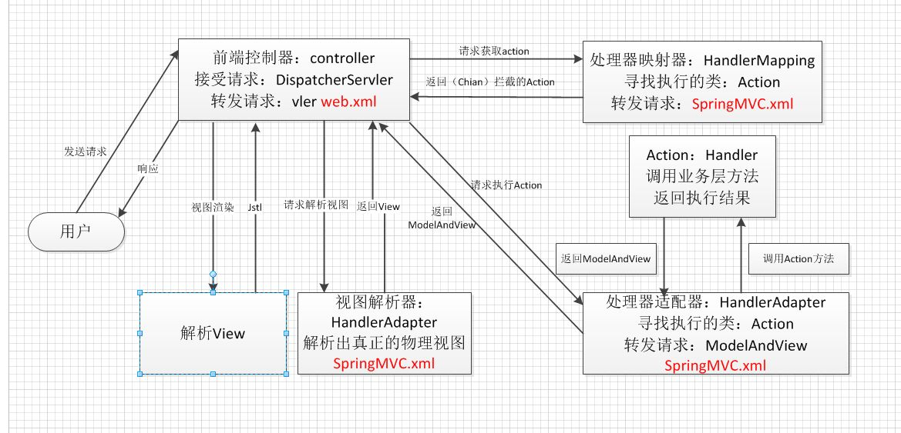
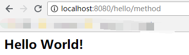
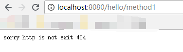

原文连接:https://www.cnblogs.com/hang-on/p/11419298.html
我们从两个方面了解springmvc执行原理，首先我们去熟悉springmvc执行的过程，然后知道原理后通过手写springmvc去深入了解代码中执行过程。
（一）SpringMVC流程图

(二)SpringMVC流程
1、 用户发送请求至前端控制器DispatcherServlet。
2、 DispatcherServlet收到请求调用HandlerMapping处理器映射器。
3、 处理器映射器找到具体的处理器(可以根据xml配置、注解进行查找)，生成处理器对象及处理器拦截器(如果有则生成)一并返回给DispatcherServlet。
4、 DispatcherServlet调用HandlerAdapter处理器适配器。
5、 HandlerAdapter经过适配调用具体的处理器(Controller，也叫后端控制器)。
6、 Controller执行完成返回ModelAndView。
7、 HandlerAdapter将controller执行结果ModelAndView返回给DispatcherServlet。
8、 DispatcherServlet将ModelAndView传给ViewReslover视图解析器。
9、 ViewReslover解析后返回具体View。
10、DispatcherServlet根据View进行渲染视图（即将模型数据填充至视图中）。
11、 DispatcherServlet响应用户。
（三）SpringMVC核心组件讲解
1、前端控制器DispatcherServlet
作用：接收请求，响应结果，相当于转发器，中央处理器。有了dispatcherServlet减少了其它组件之间的耦合度。
用户请求到达前端控制器，它就相当于mvc模式中的c，dispatcherServlet是整个流程控制的中心，由它调用其它组件处理用户的请求，dispatcherServlet的存在降低了组件之间的耦合性。
2、处理器映射器HandlerMapping
作用：根据请求的url查找Handler
HandlerMapping负责根据用户请求找到Handler即处理器，springmvc提供了不同的映射器实现不同的映射方式，例如：配置文件方式，实现接口方式，注解方式等。
3、处理器适配器HandlerAdapter
作用：按照特定规则（HandlerAdapter要求的规则）去执行Handler
通过HandlerAdapter对处理器进行执行，这是适配器模式的应用，通过扩展适配器可以对更多类型的处理器进行执行。
4、处理器Handler
Handler 是继DispatcherServlet前端控制器的后端控制器，在DispatcherServlet的控制下Handler对具体的用户请求进行处理。
由于Handler涉及到具体的用户业务请求，所以一般情况需要工程师根据业务需求开发Handler。
5、视图解析器View resolver(不需要工程师开发),由框架提供
作用：进行视图解析，根据逻辑视图名解析成真正的视图（view）
View Resolver负责将处理结果生成View视图，View Resolver首先根据逻辑视图名解析成物理视图名即具体的页面地址，再生成View视图对象，最后对View进行渲染将处理结果通过页面展示给用户。 springmvc框架提供了很多的View视图类型，包括：jstlView、freemarkerView、pdfView等。
一般情况下需要通过页面标签或页面模版技术将模型数据通过页面展示给用户，需要由工程师根据业务需求开发具体的页面。
6、视图View
View是一个接口，实现类支持不同的View类型（jsp、freemarker、pdf...）
（四）手写springMvc框架思路：
1、配置web.xml，加载自定义的DispatcherServlet。
2、初始化阶段，在DispatcherServlet类中，实现下面几个步骤：
- 加载配置类。
- 扫描当前项目下的所有文件。
- 拿到扫描到的类，通过反射机制，实例化。并且放到ioc容器中。
- 初始化path与方法的映射。
- 获取请求传入的参数并处理参数通过初始化好的handlerMapping中拿出url对应的方法名，反射调用。
3、运行阶段，每一次请求将会调用doGet或doPost方法，它会根据url请求去HandlerMapping中匹配到对应的Method，然后利用反射机制调用Controller中的url对应的方法，并得到结果返回。
（五）代码阶段：
1.web.xm加载
springMvc原理和手写springMvc框架1.png)
springMvc原理和手写springMvc框架2.png)
1 <?xml version="1.0" encoding="UTF-8"?>
2 <web-app xmlns:xsi="http://www.w3.org/2001/XMLSchema-instance" xmlns="http://java.sun.com/xml/ns/javaee" xsi:schemaLocation="http://java.sun.com/xml/ns/javaee http://java.sun.com/xml/ns/javaee/web-app_2_5.xsd" version="2.5">
3 <display-name>maven_handmvc</display-name>
4 <servlet>
5 <servlet-name>DispatcherServlet</servlet-name>
6 <servlet-class>com.zzw.cn.springmvc.dispathcer.DispatcherServlet</servlet-class>
7 </servlet>
8 <servlet-mapping>
9 <servlet-name>DispatcherServlet</servlet-name>
10 <url-pattern>/</url-pattern>
11 </servlet-mapping>
12 </web-app>2.自定义DispatcherServlet
1 package com.zzw.cn.springmvc.dispathcer;
2
3 import com.zzw.cn.springmvc.annoation.AnController;
4 import com.zzw.cn.springmvc.annoation.AnRequestMapping;
5 import com.zzw.cn.utils.ClassUtils;
6
7 import javax.servlet.ServletConfig;
8 import javax.servlet.ServletException;
9 import javax.servlet.http.HttpServlet;
10 import javax.servlet.http.HttpServletRequest;
11 import javax.servlet.http.HttpServletResponse;
12 import java.io.IOException;
13 import java.lang.reflect.InvocationTargetException;
14 import java.lang.reflect.Method;
15 import java.util.List;
16 import java.util.Map;
17 import java.util.concurrent.ConcurrentHashMap;
18
19 /**
20 * @author Simple
21 * @date 14:34 2019/8/26
22 * @description 手写springmvc框架流程
23 * <p>
24 * 思路:自定义DispatcherServlet
25 * 1.包扫描获取包下面所有的类
26 * 2.初始化包下面所有的类
27 * 3.初始化HandlerMapping方法,将url和方法对应上
28 * 4.实现HttpServlet 重写dopost方法
29 */
30
31 public class DispatcherServlet extends HttpServlet {
32
33 //springmvc 容器存放bean
34 private ConcurrentHashMap<String, Object> mvcBeans = new ConcurrentHashMap<>();
35 private ConcurrentHashMap<String, Object> mvcBeanUrl = new ConcurrentHashMap<>();
36 private ConcurrentHashMap<String, String> mvcMethodUrl = new ConcurrentHashMap<>();
37
38
39 @Override
40 public void init(ServletConfig config) {
41 String packagePath = "com.zzw.cn.springmvc";
42 //1.进行报扫描获取当前包下面所有的类
43 List<Class<?>> classes = comscanPackage(packagePath);
44 try {
45 //2.初始化springmvcbean
46 initSpringMvcBean(classes);
47 } catch (Exception e) {
48 e.printStackTrace();
49 }
50 //3.将请求地址和方法进行映射
51 initHandMapping(mvcBeans);
52 }
53
54
55 public List<Class<?>> comscanPackage(String packagePath) {
56 List<Class<?>> classes = ClassUtils.getClasses(packagePath);
57 return classes;
58 }
59
60 /**
61 * 初始化sprignbean
62 *
63 * @param classes
64 * @throws Exception
65 */
66 public void initSpringMvcBean(List<Class<?>> classes) throws Exception {
67 if (classes.size() == 0 || null == classes) {
68 throw new Exception("包扫描后的classes为null");
69 }
70
71 for (Class<?> aClass : classes) {
72 //获取被自定义注解的controller将其初始化到自定义sprignmvc容器中
73 AnController declaredAnnotation = aClass.getDeclaredAnnotation(AnController.class);
74 if (declaredAnnotation != null) {
75 //获取类的名字
76 String beanid = lowerFirstCapse(aClass.getSimpleName());
77 //获取对象
78 Object beanObj = aClass.newInstance();
79 //放入sprign容器
80 mvcBeans.put(beanid, beanObj);
81 }
82 }
83
84 }
85
86 /**
87 * 初始化HandlerMapping方法
88 *
89 * @param mvcBeans
90 */
91 public void initHandMapping(ConcurrentHashMap<String, Object> mvcBeans) {
92 //遍历springmvc 获取注入的对象值
93 for (Map.Entry<String, Object> entry : mvcBeans.entrySet()) {
94 Object objValue = entry.getValue();
95 Class<?> aClass = objValue.getClass();
96 //获取当前类 判断是否有自定义的requestMapping注解
97 String mappingUrl = null;
98 AnRequestMapping anRequestMapping = aClass.getDeclaredAnnotation(AnRequestMapping.class);
99 if (anRequestMapping != null) {
100 mappingUrl = anRequestMapping.value();
101 }
102 //获取当前类所有方法,判断方法上是否有注解
103 Method[] declaredMethods = aClass.getDeclaredMethods();
104 for (Method method : declaredMethods) {
105 AnRequestMapping methodDeclaredAnnotation = method.getDeclaredAnnotation(AnRequestMapping.class);
106 if (methodDeclaredAnnotation != null) {
107 String methodUrl = methodDeclaredAnnotation.value();
108 mvcBeanUrl.put(mappingUrl + methodUrl, objValue);
109 mvcMethodUrl.put(mappingUrl + methodUrl, method.getName());
110 }
111 }
112
113 }
114
115 }
116
117 /**
118 * @param str
119 * @return 类名首字母小写
120 */
121 public static String lowerFirstCapse(String str) {
122 char[] chars = str.toCharArray();
123 chars[0] += 32;
124 return String.valueOf(chars);
125
126 }
127
128 @Override
129 protected void doPost(HttpServletRequest req, HttpServletResponse resp) throws ServletException, IOException {
130 try {
131 doServelt(req, resp);
132 } catch (NoSuchMethodException e) {
133 e.printStackTrace();
134 } catch (InvocationTargetException e) {
135 e.printStackTrace();
136 } catch (IllegalAccessException e) {
137 e.printStackTrace();
138 }
139 }
140
141 private void doServelt(HttpServletRequest req, HttpServletResponse resp) throws IOException, NoSuchMethodException, InvocationTargetException, IllegalAccessException, ServletException {
142 //获取请求地址
143 String requestUrl = req.getRequestURI();
144 //查找地址所对应bean
145 Object object = mvcBeanUrl.get(requestUrl);
146 if (object == null) {
147 resp.getWriter().println("sorry http is not exit 404");
148 return;
149 }
150 //获取请求的方法
151 String methodName = mvcMethodUrl.get(requestUrl);
152 if (methodName == null) {
153 resp.getWriter().println("sorry method is not exit 404");
154 return;
155 }
156 //通过构反射执行方法
157 Class<?> aClass = object.getClass();
158 Method method = aClass.getMethod(methodName);
159 String invoke = (String) method.invoke(object);
160 // 获取后缀信息
161 String suffix = ".jsp";
162 // 页面目录地址
163 String prefix = "/";
164 req.getRequestDispatcher(prefix + invoke + suffix).forward(req, resp);
165 }
166
167 @Override
168 protected void doGet(HttpServletRequest req, HttpServletResponse resp) throws ServletException, IOException {
169 this.doPost(req, resp);
170 }
171
172
173 }3.ClassUtils工具类封装
1 package com.zzw.cn.utils;
2
3 import java.io.File;
4 import java.io.FileFilter;
5 import java.io.IOException;
6 import java.net.JarURLConnection;
7 import java.net.URL;
8 import java.net.URLDecoder;
9 import java.util.ArrayList;
10 import java.util.Enumeration;
11 import java.util.List;
12 import java.util.jar.JarEntry;
13 import java.util.jar.JarFile;
14
15 public class ClassUtils {
16
17 /**
18 * 从包package中获取所有的Class
19 *
20 * @param pack
21 * @return
22 */
23 public static List<Class<?>> getClasses(String packageName) {
24
25 // 第一个class类的集合
26 List<Class<?>> classes = new ArrayList<Class<?>>();
27 // 是否循环迭代
28 boolean recursive = true;
29 // 获取包的名字 并进行替换
30 String packageDirName = packageName.replace('.', '/');
31 // 定义一个枚举的集合 并进行循环来处理这个目录下的things
32 Enumeration<URL> dirs;
33 try {
34 dirs = Thread.currentThread().getContextClassLoader().getResources(packageDirName);
35 // 循环迭代下去
36 while (dirs.hasMoreElements()) {
37 // 获取下一个元素
38 URL url = dirs.nextElement();
39 // 得到协议的名称
40 String protocol = url.getProtocol();
41 // 如果是以文件的形式保存在服务器上
42 if ("file".equals(protocol)) {
43 // 获取包的物理路径
44 String filePath = URLDecoder.decode(url.getFile(), "UTF-8");
45 // 以文件的方式扫描整个包下的文件 并添加到集合中
46 findAndAddClassesInPackageByFile(packageName, filePath, recursive, classes);
47 } else if ("jar".equals(protocol)) {
48 // 如果是jar包文件
49 // 定义一个JarFile
50 JarFile jar;
51 try {
52 // 获取jar
53 jar = ((JarURLConnection) url.openConnection()).getJarFile();
54 // 从此jar包 得到一个枚举类
55 Enumeration<JarEntry> entries = jar.entries();
56 // 同样的进行循环迭代
57 while (entries.hasMoreElements()) {
58 // 获取jar里的一个实体 可以是目录 和一些jar包里的其他文件 如META-INF等文件
59 JarEntry entry = entries.nextElement();
60 String name = entry.getName();
61 // 如果是以/开头的
62 if (name.charAt(0) == '/') {
63 // 获取后面的字符串
64 name = name.substring(1);
65 }
66 // 如果前半部分和定义的包名相同
67 if (name.startsWith(packageDirName)) {
68 int idx = name.lastIndexOf('/');
69 // 如果以"/"结尾 是一个包
70 if (idx != -1) {
71 // 获取包名 把"/"替换成"."
72 packageName = name.substring(0, idx).replace('/', '.');
73 }
74 // 如果可以迭代下去 并且是一个包
75 if ((idx != -1) || recursive) {
76 // 如果是一个.class文件 而且不是目录
77 if (name.endsWith(".class") && !entry.isDirectory()) {
78 // 去掉后面的".class" 获取真正的类名
79 String className = name.substring(packageName.length() + 1, name.length() - 6);
80 try {
81 // 添加到classes
82 classes.add(Class.forName(packageName + '.' + className));
83 } catch (ClassNotFoundException e) {
84 e.printStackTrace();
85 }
86 }
87 }
88 }
89 }
90 } catch (IOException e) {
91 e.printStackTrace();
92 }
93 }
94 }
95 } catch (IOException e) {
96 e.printStackTrace();
97 }
98
99 return classes;
100 }
101
102 /**
103 * 以文件的形式来获取包下的所有Class
104 *
105 * @param packageName
106 * @param packagePath
107 * @param recursive
108 * @param classes
109 */
110 public static void findAndAddClassesInPackageByFile(String packageName, String packagePath, final boolean recursive,
111 List<Class<?>> classes) {
112 // 获取此包的目录 建立一个File
113 File dir = new File(packagePath);
114 // 如果不存在或者 也不是目录就直接返回
115 if (!dir.exists() || !dir.isDirectory()) {
116 return;
117 }
118 // 如果存在 就获取包下的所有文件 包括目录
119 File[] dirfiles = dir.listFiles(new FileFilter() {
120 // 自定义过滤规则 如果可以循环(包含子目录) 或则是以.class结尾的文件(编译好的java类文件)
121 @Override
122 public boolean accept(File file) {
123 return (recursive && file.isDirectory()) || (file.getName().endsWith(".class"));
124 }
125 });
126 // 循环所有文件
127 for (File file : dirfiles) {
128 // 如果是目录 则继续扫描
129 if (file.isDirectory()) {
130 findAndAddClassesInPackageByFile(packageName + "." + file.getName(), file.getAbsolutePath(), recursive,
131 classes);
132 } else {
133 // 如果是java类文件 去掉后面的.class 只留下类名
134 String className = file.getName().substring(0, file.getName().length() - 6);
135 try {
136 // 添加到集合中去
137 classes.add(Class.forName(packageName + '.' + className));
138 } catch (ClassNotFoundException e) {
139 e.printStackTrace();
140 }
141 }
142 }
143 }
144 }4.自定义注解类AnController
1 package com.zzw.cn.springmvc.annoation;
2
3 import java.lang.annotation.ElementType;
4 import java.lang.annotation.Retention;
5 import java.lang.annotation.RetentionPolicy;
6 import java.lang.annotation.Target;
7
8 /**
9 * @author Simple
10 * @date 14:06 2019/8/27
11 * @description
12 */
13 @Target({ElementType.TYPE,ElementType.METHOD})
14 @Retention(RetentionPolicy.RUNTIME)
15 public @interface AnController {
16 }5.自定义注解类AnRequestMapping
1 package com.zzw.cn.springmvc.annoation;
2
3 import java.lang.annotation.*;
4
5 /**
6 * @author Simple
7 * @date 14:07 2019/8/27
8 * @description
9 */
10 @Target({ElementType.METHOD, ElementType.TYPE})
11 @Retention(RetentionPolicy.RUNTIME)
12 @Documented
13 public @interface AnRequestMapping {
14 String value() default "";
15 }6.HelloWorld类
1 package com.zzw.cn.springmvc.controller;
2
3 import com.zzw.cn.springmvc.annoation.AnController;
4 import com.zzw.cn.springmvc.annoation.AnRequestMapping;
5
6 /**
7 * @author Simple
8 * @date 15:15 2019/8/27
9 * @description
10 */
11 @AnController
12 @AnRequestMapping(value = "/hello")
13 public class HelloWorld {
14 @AnRequestMapping("/method")
15 public String method(){
16 return "index";
17 }
18 }7.index.jsp
1 <html>
2 <body>
3 <h2>Hello World!</h2>
4 </body>
5 </html>8.访问地址:http://localhost:8080/hello/method
9.成功结果:

10.错误结果

现在代码已经完成了，也许开始你对很多东西不理解，但是没关系可以当作了解，多敲敲。